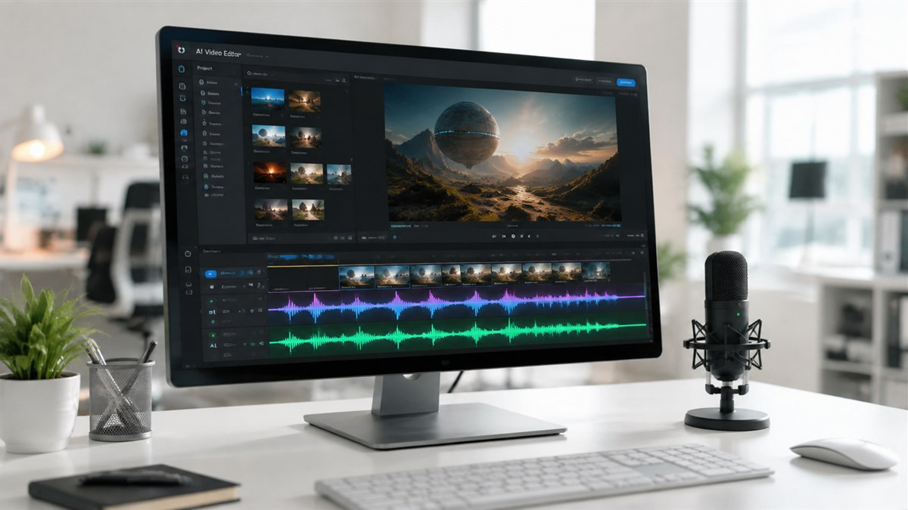

Related Review
 Sora8.5
Sora8.5Hands-on testing, score breakdown, pros & cons — everything you need to decide.
StackHKFull review
OpenAI's video model now generates dialogue, effects, and ambient sound matched to the visuals — the missing piece for production use.

OpenAI's video model now generates dialogue, effects, and ambient sound matched to the visuals — the missing piece for production use.
Sora 3 brings the long-awaited feature that turns AI video from a novelty into a production tool: synchronized native audio. Dialogue, sound effects, and ambient noise are now generated to match the visuals frame-for-frame.
We'll keep following this story and update our coverage as more details emerge. For a deeper look at the tool itself,
Sora now generates synchronized audio natively — dialogue, ambience and effects aligned to the picture, replacing the silent-video era of the product. Early access clips show credible ambient beds and lip-approximate dialogue, with sound design that follows on-screen action.
Muted AI footage read as unfinished in any professional context; sound was the cheapest way to spot generated video and the first request in every client review. Native audio moves the finish line: generated clips now enter normal editing pipelines with sound beds attached.
Frame-accurate lip sync remains the hard part — our clips showed convincing ambience and effects, while close-up dialogue still triggers the uncanny valley on careful viewing. For B-roll, atmospherics and previz, though, the output is now genuinely shippable.
Whether Veo’s audio lead forces parity features across the category, and how music licensing intersects generated soundtracks — the rights questions are arriving exactly on schedule.
For working editors the change is about pipeline position: generated clips now arrive with sound beds that make them usable in a first cut, rather than as mute placeholders needing a sound design pass before anyone can judge them. That shortens the loop from brief to reviewable — the metric production houses actually feel.
StackHK verified the details above against primary sources — official announcements, release notes and on-record statements — before publishing, and every figure in this piece carries its original attribution. Where coverage differed, we noted the discrepancy rather than picking a side. Quotes are attributed to their original context; paraphrases are marked as such.
We deliberately exclude unverified rumors even when they are circulating widely. If a material claim in this story changes or is retracted, we will update the article and date-stamp the correction rather than quietly editing it.
The immediate checkpoint is the next vendor update cycle, where follow-through on the claims above will be measurable. Competitive responses typically land within a quarter in this category, and pricing or packaging shifts are the usual first tell. StackHK will track the follow-through as part of our standing coverage — and where our hands-on testing can verify or contradict specific claims, we will publish that separately with methodology attached.
Generated video just learned to speak — and the silence was the tell.
see our full hands-on review below.
“Synced ambience and dialogue changes the review meeting: you watch, you don’t imagine.”
“The gap to camera footage narrows every release. Audio was the last obvious tell.”